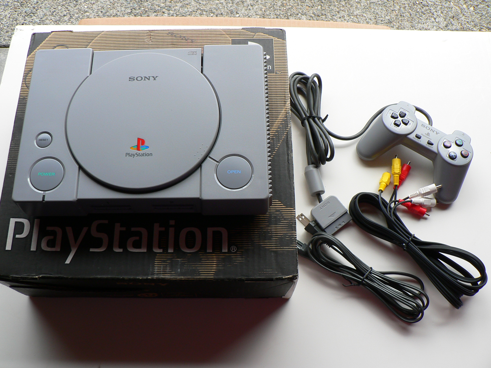

The 90s were huge for video game enthusiasts, with plenty of new consoles and games on the rise the 90s really is the year video games became the future. The first 16-bit system was released by Sega and was named Sega Genesis. This was the first console to challenge Nintendo's Entertainment System, which pushed Nintendo to strike back with their SNES also known as Super Nintendo. The SNES was Nintendo's first 16-bit system and was a huge hit. At the time Sega and Nintendo were battling to be the coolest game system with games like Street Fighter and Mortal Kombat.
Atari and 3DO started on new systems but they both failed at marketing them. So both the 3DO 32-bit system and Atari's 64-bit Jaguar systems came out but were challenged by Sega's new console.
Sega started their production on the Sega Saturn to snap back and make sure they don't become obsolete but the production was rushed and didn't have enough content on release. Sony then hopped into the gaming industry with it's first game console named Playstation. The playstation became a huge success for Sony and sold millions of units. It touched on new technology of using discs for game ROMs which would later be used more than the cartridges. Nintendo then stepped back into the game with the first 64-bit system and the last well-known console in the 90s. The Nintendo 64 could handle more than it's predecessors and had some of the best graphics for consoles in the 90s. Releasing hit games such as Super Mario 64 and The Legend of Zelda: Ocarina of Time which are still highly loved games today.
{kind=link}
Sega's last attempt at a console came with the Dreamcast which was the first unit with a built in modem for online play. The console was later discontinued and Sega would decide on being strictly a software and publishing company.
| Console Name | Year | CPU | RAM | Video |
|---|---|---|---|---|
| Sega Genesis | 1989 | 16/32-bit Motorolla 68000 7.6 MHz, Zilog Z80 Sub-processor | 72 kB | 64 kB VRAM |
| Super Nintendo | 1991 | Ricoh 5A22 3.58 MHz | 128 kB | 64 kB VRAM |
| Sega Saturn | 1995 | 2 Hitachi SH-2 28.6 MHz | 16 MB | VDP1 & VDP2 |
| Playstation | 1995 | 32-bit RISC MIPS R3000A 33.8688 MHz | 2 MB | 1 MB VRAM |
| Nintendo 64 | 1996 | 64-bit NEC VR4300 93.75 MHz | 4 MB Rambus RDRAM | SGI RCP 62.5 MHz |
| Dreamcast | 1999 | Hitachi SH-4 32-bit RISC 200 MHz | 16 MB | 100 MHz PowerVR2 8 MB VRAM |